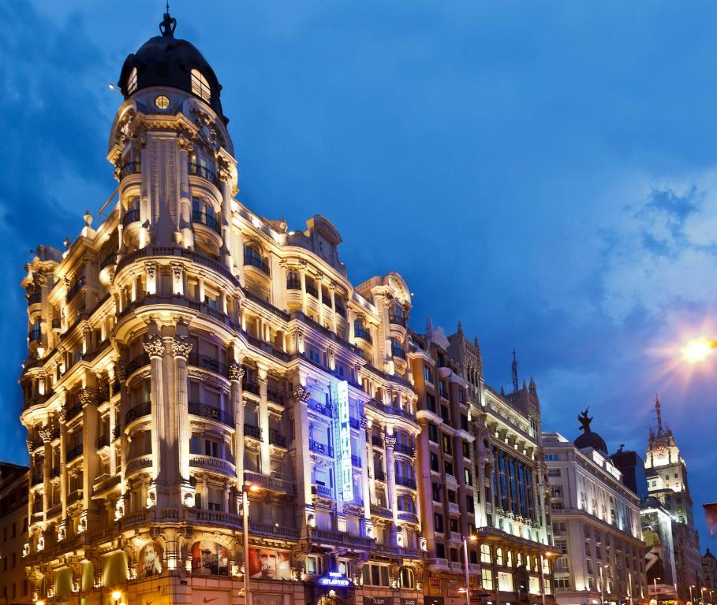
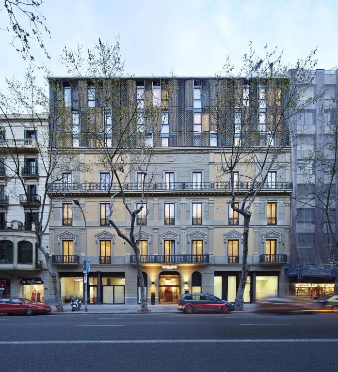
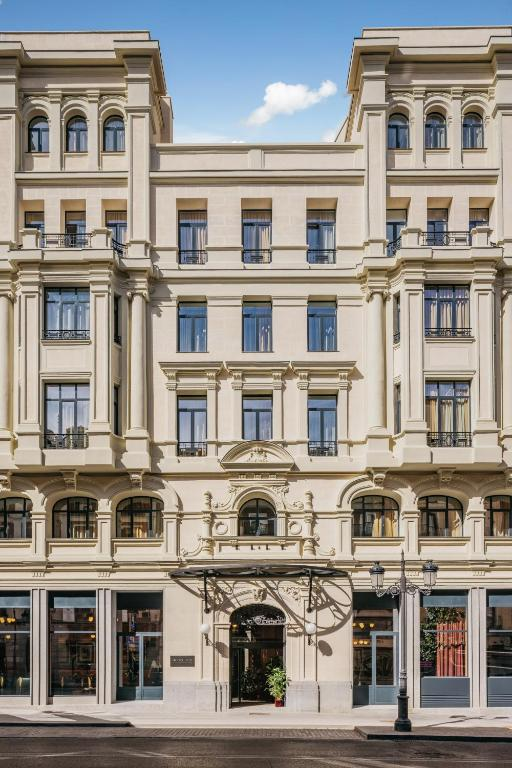

-Located in the heart of Madrid, this hotel has an excellent location score of 9.8
-Gran Vía Metro Station is just 820 feet from the Atlántico.
-The hotel has 2 terraces with panoramic views of the city.
Click this link for more details regarding the hotel: Hotel Atlántico
-Located in the heart of Barcelona, this hotel has an excellent location score of 9.5
-A restaurant and snack bar are available on-site, and the hotel offers a breakfast buffet.
-There are many bars, restaurants and shops in the surroundings, and you can reach Gaudi's La Sagrada Familia in 15 minutes by metro.
Click this link for more details regarding the hotel: Vincci Gala
-Located in the heart of Madrid, this hotel has an excellent location score of 9.3
-Just 9.9 mi from Madrid Airport, the Casa de las Artes offers easy access to all the wonders the city has to offer.
-This charming hotel has a cinema called Miró Cinema, a library for literature lovers, and a barre bar in the gym.
Click this link for more details regarding the hotel: Casa de las Artes